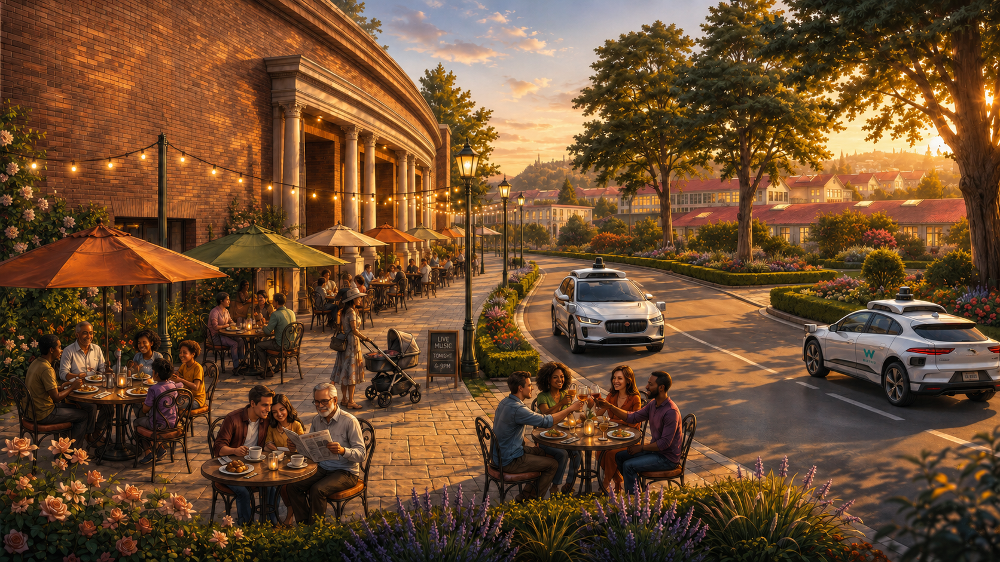
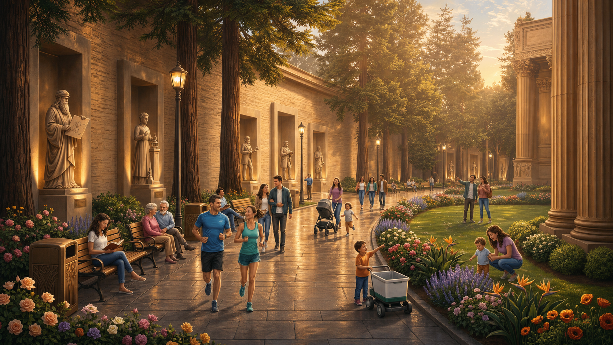
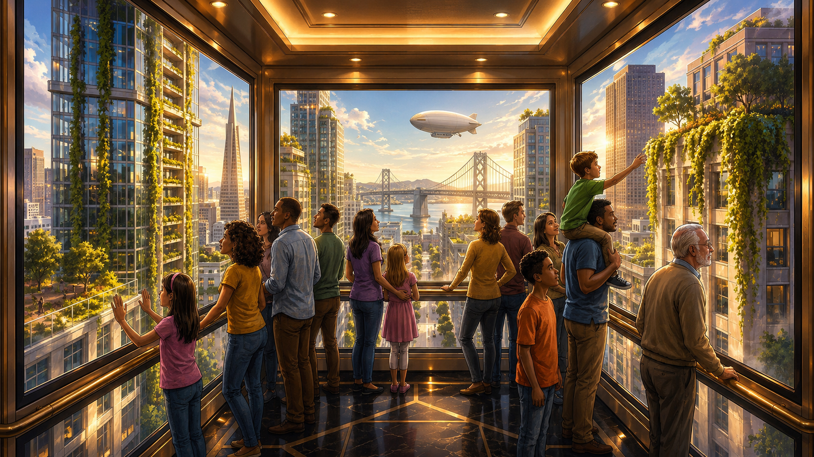
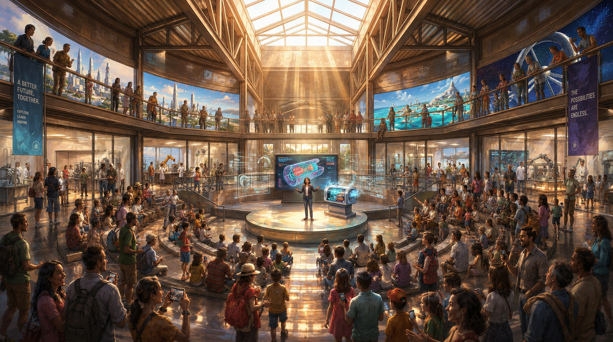

A new civic destination for San Francisco at the Palace of Fine Arts
A place you’ll love to visit with your kids, family, and friends to experience beauty, wonder, and hope for the future.
Here in the Bay Area, the most extraordinary innovations on earth are being built — cures for blindness, robots delivering lifesaving medicine, technology restoring our coral reefs.
But there’s nowhere for the public to see it.
The future needs a home.


A century ago, San Francisco showed the world what that could look like.
In 1915, just nine years after the earthquake leveled the city, San Francisco invited the world to see what it had rebuilt.
The Panama-Pacific International Exposition put San Francisco on the world stage — not as a city that survived, but as one that defined the future.
The last building standing from that fair is the Palace of Fine Arts.
It’s time to write its next chapter.
Welcome to the Future
Our vision for San Francisco’s new home of progress.
Palace of Fine Arts · 2030


Step out of your Waymo onto Palace drive.

Wander through beautifully landscaped grounds filled with statues of history’s greatest innovators.
Meet friends at the World’s Fare, grabbing a bite to eat in one of the 60+ food stalls serving global and innovative dishes.

Bring your kids on a Tour into Tomorrow, stepping into a story about the incredible future that’s ahead.

Join for a talk and workshop to learn about the incredible work being done today to build the future, and find a way to get involved.

End your evening with a beautiful fountain show before heading home with a renewed sense of wonder.
The Palace of Fine Arts will once again capture our spirit of innovation, serving as a testament to human potential.
Help write the next chapter in the story of San Francisco.
We have a once-in-a-generation opportunity to build San Francisco’s next great cultural institution.
We’re assembling a coalition of founders, funders, and builders to bring it to life.
If you’d like to play a part, I’d love to meet.

Get in Touch Visit Preview Center